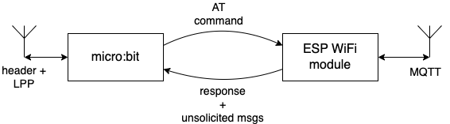

Presentatie 2#
IoT met de micro:bit
Programma#
IoT gateway
NodeRed sensor- en actuatorflows
IoT netwerk (opstelling)#

IoT netwerk <-> internet#

IoT-gateway#
verbindt IoT-netwerk en internet
omzetten van LPP payload <-> JSON MQTT payload
Payloads#
header + LPP binair formaat
[10, 59, 82, 1, 44, 0, 1, 0, 1, 1, 0, 2, 0, 0,
3, 0, 0, 4, 103, 1, 4, 8, 2, 0, 15]
JSON tekstformaat - header + payload
{"nodeid": "3b52", "counter": 300,
"payload": {
"4": {"temperature": 260}, "8": {"aIn": 15}, "1": {"dOut": 0},
"0": {"dOut": 0}, "3": {"dIn": 0}, "2": {"dIn": 0}}}
Gateway-hardware#

Gateway-protocollen#

AT voorbeelden#
AT+MQTTUSERCFG=0,1,"ESP32","espressif","1234567890",0,0,""
AT+MQTTCONN=0,"192.168.31.113",1883,0
AT+MQTTSUB=0,"topic",1
AT+MQTTPUB=0,"topic","test",1,0
enkele speciale punten#
naast AT-opdracht met response, ook ongevraagde ESP-berichten
bijv. wegvallen van MQTT verbinding
“escape” nodig in AT-string-argumenten
voor
"(quotes)en voor
,(comma) (!!)
Programmeren van gateway#
zie handleiding “micro:bits programmeren”
testen met onderstaande opstelling
NodeRed#
NodeRed: controller, verbindt IoT-onderdelen
via allerlei protocollen
verbindingen en beslissingen via “flows”
NodeRed-opdrachten#
https://eelcodijkstra.github.io/netbook0/protocollen/nodered/nodered-opdrachten.html
basis-nodes en -flows
https://eelcodijkstra.github.io/netbook0/mqtt/nodered/mqtt-nodered.html
mqtt flows, sensoren, actuatoren
NodeRed - nodes en flows#
node: input links, output(s) rechts
verbindingen: van output naar input
node: verwerkt input-message, resulteert in output-messages
input-node: heeft externe input (bijv. HTTP, MQTT)
output-node: heeft externe output (bijv. HTTP, MQTT)
Voorbeeld: http flow#

hello-tekst (template):
<h1>Hello World!<h1>
https://eelcodijkstra.github.io/netbook0/http/nodered/eerste-webserver.html
Test vb: https://elegant-goosander-2583.infvoflows.nl/hello?test=123
Opdrachten - zie Bijeenkomst 2